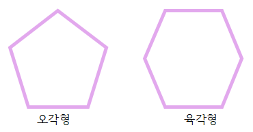

다각형과 정다각형
다각형선분으로만 둘러싸인 도형
변의 수에 따라 달라지는 다각형의 이름

- 변의 수가 3개일 때 : 삼각형
- 변의 수가 4개일 때 : 사각형
- 변의 수가 5개일 때 : 오각형
- 변의 수가 6개일 때 : 육각형
정다각형
- 변의 길이가 모두 같고 각의 크기가 모두 같은 다각형
변의 수에 따라 달라지는 정다각형의 이름
- 변의 수가 3개일 때 : 정삼각형
- 변의 수가 4개일 때 : 정사각형
- 변의 수가 5개일 때 : 정오각형
- 변의 수가 6개일 때 : 정육각형
대각선
- 대각선 :다각형에서 서로 이웃하지 않는 두 꼭짓점을 이은 선분
- 사각형의 종류에 따른 대각선의 특징 :
직사각형 : 두 대각선의 길이가 항상 같다, 한 대각선이 다른 대각선을 반으로 나눈다.
정사각형 : 두 대각선의 길이가 항상 같다, 대각선이 항상 서로 수직으로 만난다,
한 대각선이 다른 대각선을 반으로 나눈다, 두 대각선이 항상 서로 수직이고 길이가 같다.
마름모 : 대각선이 항상 서로 수직으로 만난다, 한 대각선이 다른 대각선을 반으로 나눈다.
평행사변형 : 한 대각선이 다른 대각선을 반으로 나눈다.
(다각형의 대각선 수) = (한 점에서 그을 수 있는 대각선의 수) X (꼭짓점의 수) ／2